@[toc]
Spark Shuffle
Spark Shuffle 两阶段
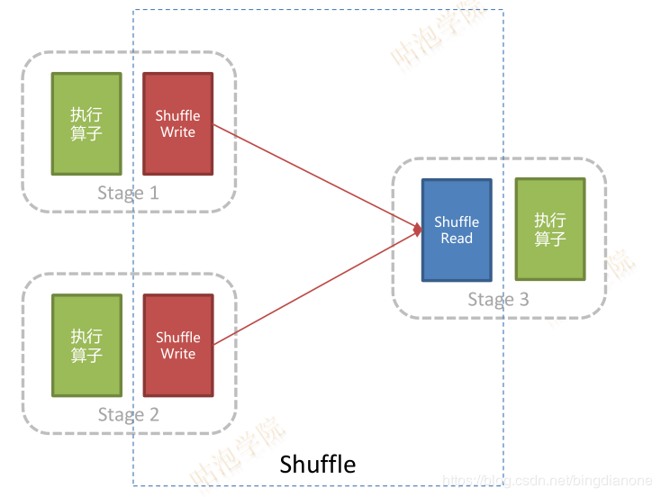
Shuffle 是个昂贵的操作
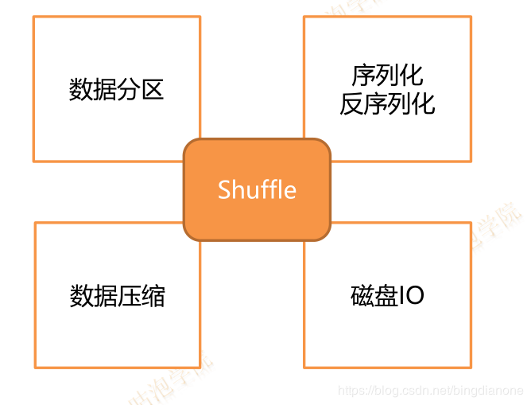
Shuffle 实现进化历史
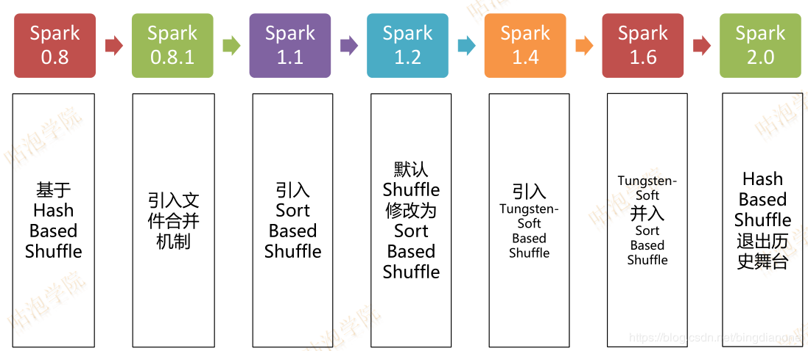
Shuffle 相关组件
- ShuffleManager
- 管理与Shuffle相关的组件
- 实现
org.apache.spark.shuffle.hash.HashShuffleManager (1.6)- org.apache.spark.shuffle.sort.SortShuffleManager
- ShuffleWriter
- 处理Shuffle输出相关逻辑
- 实现
org.apache.spark.shuffle.hash.HashShuffleWriter (1.6)- org.apache.spark.shuffle.sort.BypassMergeSortShuffleWriter
- org.apache.spark.shuffle.sort.SortShuffleWriter
- org.apache.spark.shuffle.sort.UnsafeShuffleWriter
- ShuffleReader
- 处理读取ShuffleWriter输出相关逻辑
- 实现

优点：就是操作数据简单。
缺点：但是在一些情况下(例如数据量非常大的情况)会造成大量文件(M*R,其中M代表Mapper中的所有的并行任务数量，R代表Reducer中所有的并行任务数据)大数据的随机磁盘I/O操作且会形成大量的Memory(极易造成OOM)。
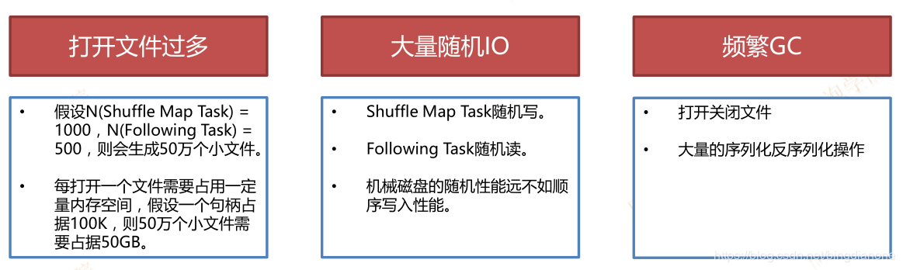
磁盘小文件过多会有什么问题？
1、在Shuffle write过程会产生很多的写磁盘的对象
2、在Shuffle read过程会产生很多的读磁盘的对象
3、在数据传输过程中，会有频繁的网络通信
在JVM堆内存中对象过多会造成频繁的GC；GC还是无法解决运行所需要的内存的话，就会oom；频繁的网络通信，会出现通信故障的可能性大大增加了，一旦网络通信出现了故障，就会出现如下的错误
Shuffle file connot find由于这个错误导致的task失败，那么TaskScheduler不负责重试，由DAGScheduler负责重试stage
HashShuffleManager产生的问题:
第一：不能够处理大规模的数据
第二：Spark不能够运行在大规模的分布式集群上！
改进方案：Consolidate机制:
spark.shuffle.consolidateFiles 该参数默认值为false，将其设置为true即可开启优化机制
后来的改善是加入了Consolidate机制来将Shuffle时候产生的文件数量减少到CR个(C代表在Mapper端，同时能够使用的cores数量，R代表Reducer中所有的并行任务数量)。但是此时如果Reducer端的并行数据分片过多的话则CR可能已经过大，此时依旧没有逃脱文件打开过多的厄运！！！Consolidate并没有降低并行度，只是降低了临时文件的数量，此时Mapper端的内存消耗就会变少，所以OOM也就会降低，另外一方面磁盘的性能也会变得更好。
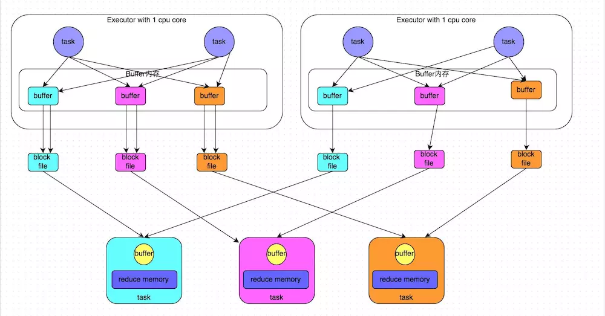
开启consolidate机制之后，在shuffle write过程中，task就不是为下游stage的每个task创建一个磁盘文件了。此时会出现shuffleFileGroup的概念，每个shuffleFileGroup会对应一批磁盘文件，磁盘文件的数量与下游stage的task数量是相同的。一个Executor上有多少个CPU core，就可以并行执行多少个task。而第一批并行执行的每个task都会创建一个shuffleFileGroup，并将数据写入对应的磁盘文件内。
前提：每个Excutor分配1个cores，假设第二个stage有100个task，第一个stage有50个task，总共还是有10个Executor，每个Executor执行5个task。那么原本使用未经优化的HashShuffleManager时，每个Executor会产生500个磁盘文件，所有Executor会产生5000个磁盘文件的。但是此时经过优化之后，每个Executor创建的磁盘文件的数量的计算公式为：CPU core的数量 * 下一个stage的task数量。也就是说，每个Executor此时只会创建100个磁盘文件，所有Executor只会创建1000个磁盘文件。
当Executor的CPU core执行完一批task，接着执行下一批task时，下一批task就会复用之前已有的shuffleFileGroup，包括其中的磁盘文件。也就是说，此时task会将数据写入已有的磁盘文件中，而不会写入新的磁盘文件中。因此，consolidate机制允许不同的task复用同一批磁盘文件，这样就可以有效将多个task的磁盘文件进行一定程度上的合并，从而大幅度减少磁盘文件的数量，进而提升shuffle write的性能。
SortShuffle
在Mapper中的每一个ShuffleMapTask中产生两个文件：Data文件和Index文件，其中Data文件是存储当前Task的Shuffle输出的。而index文件中则存储了Data文件中的数据通过Partitioner的分类信息，此时下一个阶段的Stage中的Task就是根据这个Index文件获取自己所要抓取的上一个Stage中的ShuffleMapTask产生的数据的，Reducer就是根据index文件来获取属于自己的数据。
涉及问题：Sorted-based Shuffle：会产生 2*M(M代表了Mapper阶段中并行的Partition的总数量，其实就是ShuffleMapTask的总数量)个Shuffle临时文件。
SortShuffleManager由于有一个磁盘文件merge的过程，因此大大减少了文件数量。比如第一个stage有50个task，总共有10个Executor，每个Executor执行5个task，而第二个stage有100个task。由于每个task最终只有一个磁盘文件，因此此时每个Executor上只有5个磁盘文件，所有Executor只有50个磁盘文件。
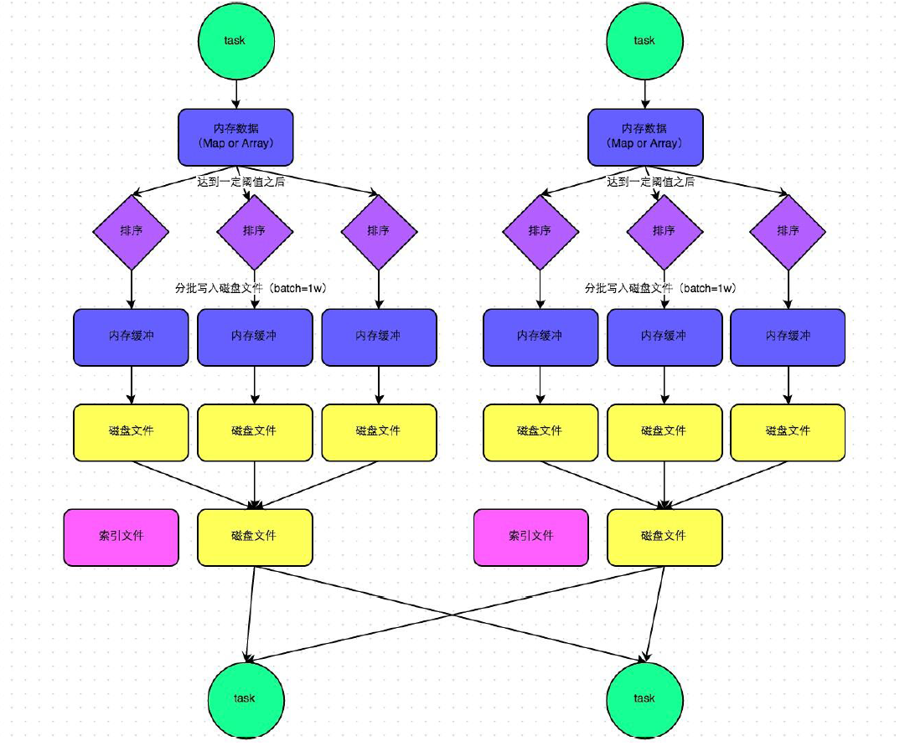
普通机制Sort-based Shuffle的流程：
（1） map task的计算结果会写入到一个内存数据结构里面，内存数据结构默认是5M
（2） 在shuffle的时候会有一个定时器，不定期的去估算这个内存数据结构的大小，如果现在内存数据结构的大小是5.01M，那么它会申请5.01*2-5=5.02M内存给内存数据结构
（3） 如果申请成功，不会进行溢写
（4） 如果申请不成功，这个时候就会有溢写的过程
（5） 在溢写之前，会将内存数据结构里面的数据进行排序，以及分区
（6） 然后开始写磁盘，写磁盘是以bacth的形式去写，一个batch是1W条数据
（7） Map task执行完成后，会将这些磁盘小文件合并成一个大的磁盘文件，同时生成一个索引
（8） Reduce task去map端拉数据的时候，首先解析索引文件，根据索引文件再去拉去属于它自己的数据
产生磁盘小文件的公式：2M（M代表了Mapper阶段中并行的Partition的总数量，其实就是ShuffleMapTask的总数量）
默认Sort-based Shuffle的几个缺陷：
1）如果Mapper中Task的数量过大，依旧会产生很多小文件，此时在Shuffle传递数据的过程中到Reducer端，reduce会需要同时打开大量的记录来进行反序列化，导致大量的内存消耗和GC的巨大负担，造成系统缓慢甚至崩溃！
2）如果需要在分片内也进行排序的话，此时需要进行Mapper端和Reducer端的两次排序！！！
优化：
可以改造Mapper和Reducer端，改框架来实现一次排序。
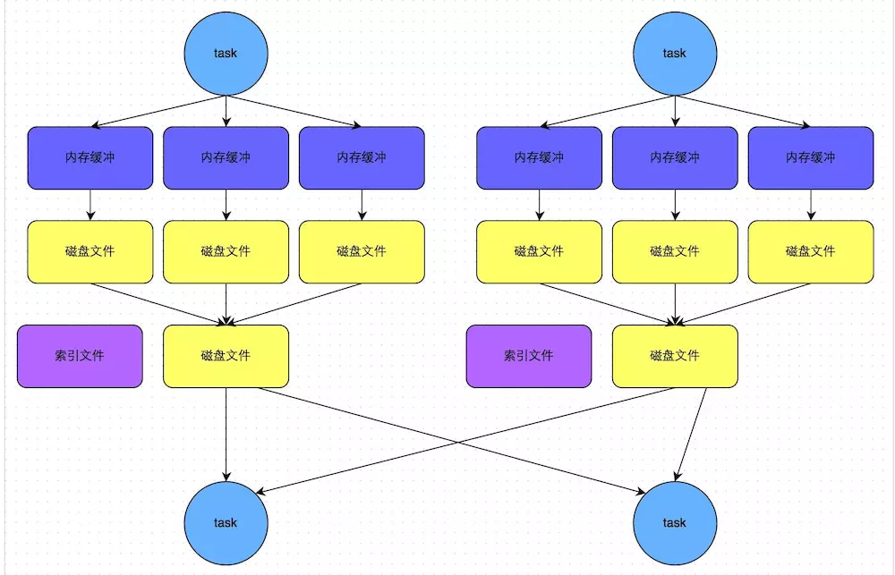
bypass运行机制
1、spark.shuffle.sort.bypassMergeThreshold 默认值为200 ，如果shuffle read task的数量小于这个阀值200，则不会进行排序。
2、或者使用hashbasedshuffle + consolidateFiles 机制
上图说明了bypass SortShuffleManager的原理。bypass运行机制的触发条件如下：
1) shuffle map task数量小于spark.shuffle.sort.bypassMergeThreshold参数的值。
这个参数仅适用于SortShuffleManager，如前所述，SortShuffleManager在处理不需要排序的Shuffle操作时，由于排序带来性能的下降。这个参数决定了在这种情况下，当Reduce分区的数量小于多少的时候，在SortShuffleManager内部不使用Merge Sort的方式处理数据，而是与Hash Shuffle类似，直接将分区文件写入单独的文件，不同的是，在最后一步还是会将这些文件合并成一个单独的文件。这样通过去除Sort步骤来加快处理速度，代价是需要并发打开多个文件，所以内存消耗量增加，本质上是相对HashShuffleMananger一个折衷方案。这个参数的默认值是200个分区，如果内存GC问题严重，可以降低这个值。
2) 不是聚合类的shuffle算子（比如reduceByKey）。
此时task会为每个下游task都创建一个临时磁盘文件，并将数据按key进行hash然后根据key的hash值，将key写入对应的磁盘文件之中。当然，写入磁盘文件时也是先写入内存缓冲，缓冲写满之后再溢写到磁盘文件的。最后，同样会将所有临时磁盘文件都合并成一个磁盘文件，并创建一个单独的索引文件。
该过程的磁盘写机制其实跟未经优化的HashShuffleManager是一模一样的，因为都要创建数量惊人的磁盘文件，只是在最后会做一个磁盘文件的合并而已。因此少量的最终磁盘文件，也让该机制相对未经优化的HashShuffleManager来说，shuffle read的性能会更好。
而该机制与普通SortShuffleManager运行机制的不同在于：第一，磁盘写机制不同；第二，不会进行排序。也就是说，启用该机制的最大好处在于，shuffle write过程中，不需要进行数据的排序操作，也就节省掉了这部分的性能开销。
Sort Shuffle 存在的问题？
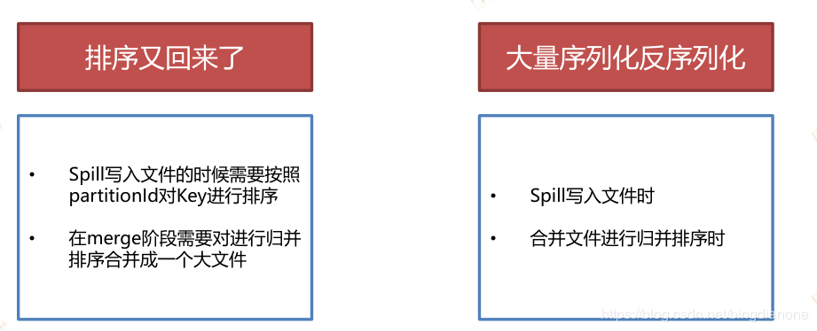
Sort Shuffle 改进 Tungsten 计划
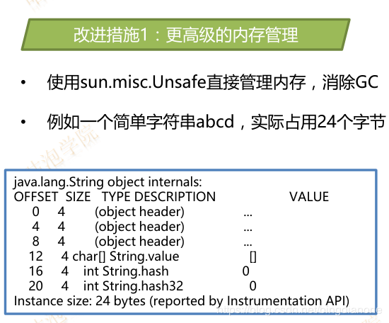
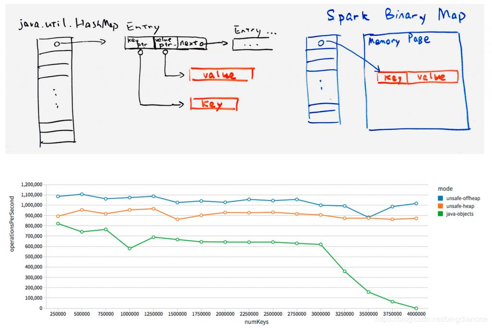
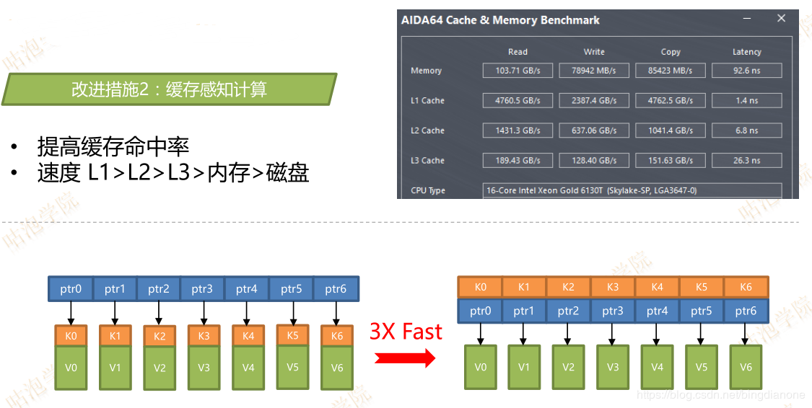
But 使用Tungsten限制条件
- 在shuffle阶段不能有aggregate：例如reduceByKey
- 分区数不能超过2^24 − 1
总结
有三个可选项：hash、sort和tungsten-sort。HashShuffleManager是Spark 1.2以前的默认选项，但是Spark 1.2以及之后的版本默认都是SortShuffleManager了。tungsten-sort与sort类似，但是使用了tungsten计划中的堆外内存管理机制，内存使用效率更高。tungsten-sort慎用，存在bug.
spark shuffle参数调优
- 调整spill频率
- spark.shuffle.file.buffer
- map task的内存缓冲调节参数，默认是32kb
- spark.shuffle.memoryFraction
- reduce端聚合内存占比，默认0.2
- 如何调整？
- 通过监控平台观察shuffle write和shuffle read的运行次数
- 尽量减少Shuffle次数
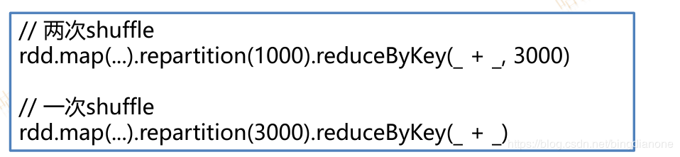
spark.shuffle.file.buffer
- 默认值：32k
- 参数说明：该参数用于设置shuffle write task的BufferedOutputStream的buffer缓冲大小。将数据写到磁盘文件之前，会先写入buffer缓冲中，待缓冲写满之后，才会溢写到磁盘。
- 调优建议：如果作业可用的内存资源较为充足的话，可以适当增加这个参数的大小（比如64k），从而减少shuffle write过程中溢写磁盘文件的次数，也就可以减少磁盘IO次数，进而提升性能。在实践中发现，合理调节该参数，性能会有1%~5%的提升。
spark.reducer.maxSizeInFlight
- 默认值：48m
- 参数说明：该参数用于设置shuffle read task的buffer缓冲大小，而这个buffer缓冲决定了每次能够拉取多少数据。
- 调优建议：如果作业可用的内存资源较为充足的话，可以适当增加这个参数的大小（比如96m），从而减少拉取数据的次数，也就可以减少网络传输的次数，进而提升性能。在实践中发现，合理调节该参数，性能会有1%~5%的提升。
- Reduce task去map拉数据，reduce 一边拉数据一边聚合 reduce端有一块聚合内存（executor memory）
- 解决方法：
（1）增加reduce聚合的内存比例 设置spark.Shuffle.memoryFraction
（2）增加executor memory的大小 –executor-memory 5G
（3）减少reduce task每次拉取的数据量 设置
spark.reducer.maxSizeInFlight 24m
spark.shuffle.io.maxRetries
- 默认值：3
- 参数说明：shuffle read task从shuffle write task所在节点拉取属于自己的数据时，如果因为网络异常导致拉取失败，是会自动进行重试的。该参数就代表了可以重试的最大次数。如果在指定次数之内拉取还是没有成功，就可能会导致作业执行失败。
- 调优建议：对于那些包含了特别耗时的shuffle操作的作业，建议增加重试最大次数（比如60次），以避免由于JVM的full gc或者网络不稳定等因素导致的数据拉取失败。在实践中发现，对于针对超大数据量（数十亿~上百亿）的shuffle过程，调节该参数可以大幅度提升稳定性。
spark.shuffle.io.retryWait
- 默认值：5s
- 参数说明：具体解释同上，该参数代表了每次重试拉取数据的等待间隔，默认是5s。
- 调优建议：建议加大间隔时长（比如60s），以增加shuffle操作的稳定性。
spark.shuffle.memoryFraction
- 默认值：0.2
- 参数说明：该参数代表了Executor内存中，分配给shuffle read task进行聚合操作的内存比例，默认是20%。
- 调优建议：在资源参数调优中讲解过这个参数。如果内存充足，而且很少使用持久化操作，建议调高这个比例，给shuffle read的聚合操作更多内存，以避免由于内存不足导致聚合过程中频繁读写磁盘。在实践中发现，合理调节该参数可以将性能提升10%左右。
spark.shuffle.manager
- 默认值：sort
- 参数说明：该参数用于设置ShuffleManager的类型。Spark 1.5以后，有三个可选项：hash、sort和tungsten-sort。HashShuffleManager是Spark 1.2以前的默认选项，但是Spark 1.2以及之后的版本默认都是SortShuffleManager了。tungsten-sort与sort类似，但是使用了tungsten计划中的堆外内存管理机制，内存使用效率更高。
- 调优建议：由于SortShuffleManager默认会对数据进行排序，因此如果你的业务逻辑中需要该排序机制的话，则使用默认的SortShuffleManager就可以；而如果你的业务逻辑不需要对数据进行排序，那么建议参考后面的几个参数调优，通过bypass机制或优化的HashShuffleManager来避免排序操作，同时提供较好的磁盘读写性能。这里要注意的是，tungsten-sort要慎用，因为之前发现了一些相应的bug。
spark.shuffle.sort.bypassMergeThreshold
- 默认值：200
- 参数说明：当ShuffleManager为SortShuffleManager时，如果shuffle read task的数量小于这个阈值（默认是200），则shuffle write过程中不会进行排序操作，而是直接按照未经优化的HashShuffleManager的方式去写数据，但是最后会将每个task产生的所有临时磁盘文件都合并成一个文件，并会创建单独的索引文件。
- 调优建议：当你使用SortShuffleManager时，如果的确不需要排序操作，那么建议将这个参数调大一些，大于shuffle read task的数量。那么此时就会自动启用bypass机制，map-side就不会进行排序了，减少了排序的性能开销。但是这种方式下，依然会产生大量的磁盘文件，因此shuffle write性能有待提高。
spark.shuffle.consolidateFiles
- 默认值：false
- 参数说明：如果使用HashShuffleManager，该参数有效。如果设置为true，那么就会开启consolidate机制，会大幅度合并shuffle write的输出文件，对于shuffle read task数量特别多的情况下，这种方法可以极大地减少磁盘IO开销，提升性能。
- 调优建议：如果的确不需要SortShuffleManager的排序机制，那么除了使用bypass机制，还可以尝试将spark.shffle.manager参数手动指定为hash，使用HashShuffleManager，同时开启consolidate机制。在实践中尝试过，发现其性能比开启了bypass机制的SortShuffleManager要高出10%~30%。
Spark RDD
RDD机制
rdd是一个弹性的分布式数据集，简单的理解成一种数据结构，是spark框架上的通用货币。
所有算子都是基于rdd来执行的，不同的场景会有不同的rdd实现类，但是都可以进行互相转换。
rdd执行过程中会形成dag图，然后形成lineage保证容错性等。
从物理的角度来看rdd存储的是block和node之间的映射。
RDD弹性的分布式数据集五大特性
- RDD有一系列的Partition组成的
- 每一个算子实际上是作用在每一个partition上
- rdd之间是有依赖关系的
- 可选项:分区器作用在KV格式的RDD上
(1)分区器是在shuffle阶段起作用
(2) GroupByKey, reduceByKey, join, sortBykey等这些算子会产生shuffle
(3)这些算子必须作用在KV格式的RDD
所以，如果不用RDD的持久化机制，可能对于相同的RDD的计算需要重复从HDFS源头获取数据进行计算，这样会浪费很多时间成本；
使用持久化
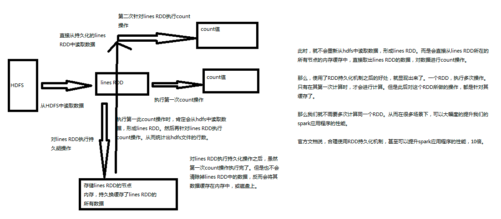
- Spark非常重要的一个功能特性就是可以将RDD持久化在内存中。当对RDD执行持久化操作时，每个节点都会将自己操作的RDD的partition持久化到内存中，并且在之后对该RDD的反复使用中，直接使用内存缓存的partition。这样的话，对于针对一个RDD反复执行多个操作的场景，就只要对RDD计算一次即可，后面直接使用该RDD，而不需要反复计算多次该RDD。
- 巧妙使用RDD持久化，甚至在某些场景下，可以将spark应用程序的性能提升10倍。对于迭代式算法和快速交互式应用来说，RDD持久化，是非常重要的。
- 要持久化一个RDD，只要调用其cache()或者persist()方法即可。在该RDD第一次被计算出来时，就会直接缓存在每个节点中。而且Spark的持久化机制还是自动容错的，如果持久化的RDD的任何partition丢失了，那么Spark会自动通过其源RDD，使用transformation操作重新计算该partition。
- 1）cache和persist都是用于将一个RDD进行缓存的，这样在之后使用的过程中就不需要重新计算了，可以大大节省程序运行时间；2） cache只有一个默认的缓存级别MEMORY_ONLY ，cache调用了persist，而persist可以根据情况设置其它的缓存级别；3）executor执行的时候，默认60%做cache，40%做task操作，persist最根本的函数，最底层的函数。如果需要从内存中清楚缓存，那么可以使用unpersist()方法。
- Spark自己也会在shuffle操作时，进行数据的持久化，比如写入磁盘，主要是为了在节点失败时，避免需要重新计算整个过程。
Spark 中一个很重要的能力是将数据持久化（或称为缓存），在多个操作间都可以访问这些持久化的数据。当持久化一个 RDD 时，每个节点的其它分区都可以使用 RDD在内存中进行计算，在该数据上的其他 action 操作将直接使用内存中的数据。这样会让以后的 action 操作计算速度加快（通常运行速度会加速 10倍）。缓存是迭代算法和快速的交互式使用的重要工具。
RDD 可以使用persist() 方法或 cache() 方法进行持久化。数据将会在第一次 action 操作时进行计算，并缓存在节点的内存中。Spark 的缓存具有容错机制，如果一个缓存的 RDD 的某个分区丢失了，Spark 将按照原来的计算过程，自动重新计算并进行缓存。
另外，每个持久化的 RDD 可以使用不同的存储级别进行缓存，例如，持久化到磁盘、已序列化的 Java 对象形式持久化到内存（可以节省空间）、跨节点间复制、以 off-heap 的方式存储在 Tachyon。这些存储级别通过传递一个 StorageLevel 对象（Scala、Java、Python）给 persist() 方法进行设置。cache()方法是使用默认存储级别的快捷设置方法，默认的存储级别是 StorageLevel.MEMORY_ONLY（将反序列化的对象存储到内存中）。详细的存储级别介绍如下 :
- MEMORY_ONLY : 将 RDD 以反序列化 Java 对象的形式存储在 JVM 中。如果内存空间不够，部分数据分区将不再缓存，在每次需要用到这些数据时重新进行计算。这是默认的级别。
- MEMORY_AND_DISK : 将 RDD 以反序列化 Java 对象的形式存储在 JVM 中。如果内存空间不够，将未缓存的数据分区存储到磁盘，在需要使用这些分区时从磁盘读取。
- MEMORY_ONLY_SER : 将 RDD 以序列化的 Java 对象的形式进行存储（每个分区为一个 byte 数组）。这种方式会没有序列化对象的方式节省很多空间，尤其是在使用 fast serializer时会节省更多的空间，但是在读取时会增加 CPU 的计算负担。
- MEMORY_AND_DISK_SER : 类似于 MEMORY_ONLY_SER ，但是溢出的分区会存储到磁盘，而不是在用到它们时重新计算。
- DISK_ONLY : 只在磁盘上缓存 RDD。
- MEMORY_ONLY_2，MEMORY_AND_DISK_2，等等 : 与上面的级别功能相同，只不过每个分区在集群中两个节点上建立副本。
- OFF_HEAP（实验中）: 类似于 MEMORY_ONLY_SER ，但是将数据存储在 off-heap memory，这需要启动 off-heap 内存。
注意，在 Python 中，缓存的对象总是使用 Pickle 进行序列化，所以在 Python 中不关心你选择的是哪一种序列化级别。python 中的存储级别包括 MEMORY_ONLY，MEMORY_ONLY_2，MEMORY_AND_DISK，MEMORY_AND_DISK_2，DISK_ONLY和 DISK_ONLY_2 。
在 shuffle 操作中（例如 reduceByKey），即便是用户没有调用 persist 方法，Spark 也会自动缓存部分中间数据。这么做的目的是，在 shuffle 的过程中某个节点运行失败时，不需要重新计算所有的输入数据。如果用户想多次使用某个 RDD，强烈推荐在该 RDD 上调用 persist方法。
如何选择存储级别
Spark 的存储级别的选择，核心问题是在内存使用率和 CPU 效率之间进行权衡。建议按下面的过程进行存储级别的选择 :
- 如果使用默认的存储级别（MEMORY_ONLY），存储在内存中的 RDD 没有发生溢出，那么就选择默认的存储级别。默认存储级别可以最大程度的提高 CPU 的效率,可以使在 RDD 上的操作以最快的速度运行。
- 如果内存不能全部存储 RDD，那么使用 MEMORY_ONLY_SER，并挑选一个快速序列化库将对象序列化，以节省内存空间。使用这种存储级别，计算速度仍然很快。
- 除了在计算该数据集的代价特别高，或者在需要过滤大量数据的情况下，尽量不要将溢出的数据存储到磁盘。因为，重新计算这个数据分区的耗时与从磁盘读取这些数据的耗时差不多。
- 如果想快速还原故障，建议使用多副本存储级别（例如，使用 Spark 作为 web 应用的后台服务，在服务出故障时需要快速恢复的场景下）。所有的存储级别都通过重新计算丢失的数据的方式，提供了完全容错机制。但是多副本级别在发生数据丢失时，不需要重新计算对应的数据库，可以让任务继续运行。
删除RDD
Spark 自动监控各个节点上的缓存使用率，并以最近最少使用的方式（LRU）将旧数据块移除内存。如果想手动移除一个 RDD，而不是等待该 RDD 被 Spark自动移除，可以使用 RDD.unpersist()方法。
checkpoint检查点机制
一个Streaming应用程序要求7天24小时不间断运行，因此必须适应各种导致应用程序失败的场景。Spark Streaming的检查点具有容错机制，有足够的信息能够支持故障恢复。支持两种数据类型的检查点：元数据检查点和数据检查点。
（1）元数据检查点，在类似HDFS的容错存储上，保存Streaming计算信息。这种检查点用来恢复运行Streaming应用程序失败的Driver进程。
（2）数据检查点，在进行跨越多个批次合并数据的有状态操作时尤其重要。在这种转换操作情况下，依赖前一批次的RDD生成新的RDD，随着时间不断增加，RDD依赖链的长度也在增加，为了避免这种无限增加恢复时间的情况，通过周期检查将转换RDD的中间状态进行可靠存储，借以切断无限增加的依赖。使用有状态的转换，如果updateStateByKey或者reduceByKeyAndWindow在应用程序中使用，那么需要提供检查点路径，对RDD进行周期性检查。
元数据检查点主要用来恢复失败的Driver进程，而数据检查点主要用来恢复有状态的转换操作。无论是Driver失败，还是Worker失败，这种检查点机制都能快速恢复。许多Spark Streaming都是使用检查点方式。但是简单的Streaming应用程序，不包含状态转换操作不能运行检查点；从Driver程序故障中恢复可能会造成一些收到没有处理的数据丢失。
为了让一个Spark Streaming程序能够被恢复，需要启用检查点，必须设置一个容错的、可靠的文件系统（如HDFS、S3等）路径保存检查点信息，同时设置时间间隔。
streamingContext.checkpoint(checkpointDirectory)//checkpointDirectory
是一个文件系统路径（最好是一个可靠的比如hdfs://….） dstream.checkpoint(checkpointInterval)//设置时间间隔
当程序第一次启动时，创建一个新的StreamingContext，接着创建所有的数据流，然后再调用start()方法。
1 | //定义一个创建并设置StreamingContext的函数 |
通过使用getOrCreate创建StreamingContext。
当程序因为异常重启时，如果检查点路径存在，则context将从检查点数据中重建。如果检查点目录不存在（首次运行），将会调用functionToCreateContext函数新建context函数新建context，并设置DStream。
但是，Streaming需要保存中间数据到容错存储系统，这个策略会引入存储开销，进而可能会导致相应的批处理时间变长，因此，检查点的时间间隔需要精心设置。采取小批次时，每批次检查点可以显著减少操作的吞吐量；相反，检查点太少可能会导致每批次任务大小的增加。对于RDD检查点的有状态转换操作，其检查点间隔默认设置成DStream的滑动间隔的5~10倍。
故障恢复可以使用Spark的Standalone模式自动完成，该模式允许任何Spark应用程序的Driver在集群内启动，并在失败时重启。而对于YARN或Mesos这样的部署环境，则必须通过其他的机制重启Driver。
checkpoint和持久化机制的区别
1.持久化只是将数据保存在BlockManager中，而RDD的lineage是不变的。但是checkpoint执行完后，RDD已经没有之前所谓的依赖RDD了，而只有一个强行为其设置的checkpointRDD，RDD的lineage改变了。
2.持久化的数据丢失可能性更大，磁盘、内存都可能会存在数据丢失的情况。但是checkpoint的数据通常是存储在如HDFS等容错、高可用的文件系统，数据丢失可能性较小。
注：默认情况下，如果某个RDD没有持久化，但是设置了checkpoint，会存在问题，本来这个job都执行结束了，但是由于中间RDD没有持久化，checkpoint job想要将RDD的数据写入外部文件系统的话，需要全部重新计算一次，再将计算出来的RDD数据checkpoint到外部文件系统。所以，建议对checkpoint()的RDD使用persist(StorageLevel.DISK_ONLY)，该RDD计算之后，就直接持久化到磁盘上。后面进行checkpoint操作时就可以直接从磁盘上读取RDD的数据，并checkpoint到外部文件系统。
RDD的弹性表现在哪几点
1）自动的进行内存和磁盘的存储切换；
2）基于Linage的高效容错；
3）task如果失败会自动进行特定次数的重试；
4）stage如果失败会自动进行特定次数的重试，而且只会计算失败的分片；
5）checkpoint和persist，数据计算之后持久化缓存
6）数据调度弹性，DAG TASK调度和资源无关
7）数据分片的高度弹性，a.分片很多碎片可以合并成大的，b.par
RDD有哪些缺陷
1）不支持细粒度的写和更新操作（如网络爬虫），spark写数据是粗粒度的
所谓粗粒度，就是批量写入数据，为了提高效率。但是读数据是细粒度的也就是说可以一条条的读
2）不支持增量迭代计算，Flink支持
RDD创建有哪几种方式
1).使用程序中的集合创建rdd
2).使用本地文件系统创建rdd
3).使用hdfs创建rdd，
4).基于数据库db创建rdd
5).基于Nosql创建rdd，如hbase
6).基于s3创建rdd，
7).基于数据流，如socket创建rdd
如果只回答了前面三种，是不够的，只能说明你的水平还是入门级的，实践过程中有很多种创建方式。
RDD通过Linage（记录数据更新）的方式为何很高效
1）lazy记录了数据的来源，RDD是不可变的，且是lazy级别的，且rDD之间构成了链条，lazy是弹性的基石。由于RDD不可变，所以每次操作就产生新的rdd，不存在全局修改的问题，控制难度下降，所有有计算链条将复杂计算链条存储下来，计算的时候从后往前回溯900步是上一个stage的结束，要么就checkpoint
2）记录原数据，是每次修改都记录，代价很大如果修改一个集合，代价就很小，官方说rdd是粗粒度的操作，是为了效率，为了简化，每次都是操作数据集合，写或者修改操作，都是基于集合的rdd的写操作是粗粒度的，rdd的读操作既可以是粗粒度的也可以是细粒度，读可以读其中的一条条的记录。
3）简化复杂度，是高效率的一方面，写的粗粒度限制了使用场景，如网络爬虫，现实世界中，大多数写是粗粒度的场景
宽依赖和窄依赖？
Spark中RDD的高效与DAG（有向无环图）有很大的关系，在DAG调度中需要对计算的过程划分Stage，划分的依据就是RDD之间的依赖关系。RDD之间的依赖关系分为两种，宽依赖(wide dependency/shuffle dependency)和窄依赖（narrow dependency）
1.窄依赖
窄依赖就是指父RDD的每个分区只被一个子RDD分区使用，子RDD分区通常只对应常数个父RDD分区，如下图所示【其中每个小方块代表一个RDD Partition】
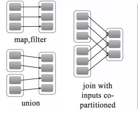
窄依赖有分为两种：
- 一种是一对一的依赖，即OneToOneDependency
- 还有一个是范围的依赖，即RangeDependency，它仅仅被org.apache.spark.rdd.UnionRDD使用。UnionRDD是把多个RDD合成一个RDD，这些RDD是被拼接而成，即每个parent RDD的Partition的相对顺序不会变，只不过每个parent RDD在UnionRDD中的Partition的起始位置不同
2.宽依赖
宽依赖就是指父RDD的每个分区都有可能被多个子RDD分区使用，子RDD分区通常对应父RDD所有分区，如下图所示【其中每个小方块代表一个RDD Partition】
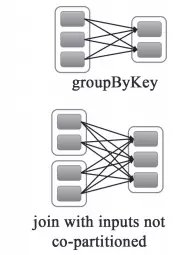
3.窄依赖与窄依赖比较
- 宽依赖往往对应着shuffle操作，需要在运行的过程中将同一个RDD分区传入到不同的RDD分区中，中间可能涉及到多个节点之间数据的传输，而窄依赖的每个父RDD分区通常只会传入到另一个子RDD分区，通常在一个节点内完成。
- 当RDD分区丢失时，对于窄依赖来说，由于父RDD的一个分区只对应一个子RDD分区，这样只需要重新计算与子RDD分区对应的父RDD分区就行。这个计算对数据的利用是100%的
- 当RDD分区丢失时，对于宽依赖来说，重算的父RDD分区只有一部分数据是对应丢失的子RDD分区的，另一部分就造成了多余的计算。宽依赖中的子RDD分区通常来自多个父RDD分区，极端情况下，所有父RDD都有可能重新计算。如下图，par4丢失，则需要重新计算par1,par2,par3,产生了冗余数据par5
分区丢失图
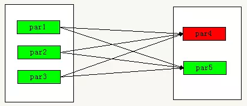
4.宽依赖，窄依赖函数
- 窄依赖的函数有：
map, filter, union, join(父RDD是hash-partitioned ), mapPartitions, mapValues - 宽依赖的函数有：
groupByKey, join(父RDD不是hash-partitioned ), partitionBy提交任务时，如何指定Spark Application的运行模式？
1）cluster模式：./spark-submit –class xx.xx.xx –master yarn –deploy-mode cluster xx.jar
2) client模式:./spark-submit –class xx.xx.xx –master yarn –deploy-mode client xx.jar
spark api演进
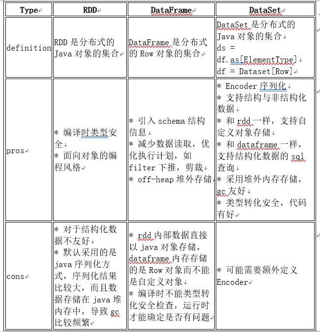
Spark并行度怎么设置比较合适
答：spark并行度，每个core承载2~4个partition,如，32个core，那么64~128之间的并行度，也就是设置64~128个partion，并行读和数据规模无关，只和内存使用量和cpu使用时间有关
Spark为什么要持久化，一般什么场景下要进行persist操作？
为什么要进行持久化？
spark所有复杂一点的算法都会有persist身影,spark默认数据放在内存，spark很多内容都是放在内存的，非常适合高速迭代，1000个步骤
只有第一个输入数据，中间不产生临时数据，但分布式系统风险很高，所以容易出错，就要容错，rdd出错或者分片可以根据血统算出来，如果没有对父rdd进行persist 或者cache的化，就需要重头做。
以下场景会使用persist
1）某个步骤计算非常耗时，需要进行persist持久化
2）计算链条非常长，重新恢复要算很多步骤，很好使，persist
3）checkpoint所在的rdd要持久化persist，
lazy级别，框架发现有checnkpoint，checkpoint时单独触发一个job，需要重算一遍，checkpoint前
要持久化，写个rdd.cache或者rdd.persist，将结果保存起来，再写checkpoint操作，这样执行起来会非常快，不需要重新计算rdd链条了。checkpoint之前一定会进行persist。
4）shuffle之后为什么要persist，shuffle要进性网络传输，风险很大，数据丢失重来，恢复代价很大
5）shuffle之前进行persist，框架默认将数据持久化到磁盘，这个是框架自动做的。
spark parition
spark hashParitioner的弊端是什么？
答:HashPartitioner分区的原理很简单，对于给定的key，计算其hashCode，并除于分区的个数取余，如果余数小于0，则用余数+分区的个数，最后返回的值就是这个key所属的分区ID；弊端是数据不均匀，容易导致数据倾斜，极端情况下某几个分区会拥有rdd的所有数据
RangePartitioner分区的原理?
答:RangePartitioner分区则尽量保证每个分区中数据量的均匀，而且分区与分区之间是有序的，也就是说一个分区中的元素肯定都是比另一个分区内的元素小或者大；但是分区内的元素是不能保证顺序的。简单的说就是将一定范围内的数映射到某一个分区内。其原理是水塘抽样。
介绍parition和block有什么关联关系？
答：1）hdfs中的block是分布式存储的最小单元，等分，可设置冗余，这样设计有一部分磁盘空间的浪费，但是整齐的block大小，便于快速找到、读取对应的内容；2）Spark中的partion是弹性分布式数据集RDD的最小单元，RDD是由分布在各个节点上的partion组成的。partion是指的spark在计算过程中，生成的数据在计算空间内最小单元，同一份数据（RDD）的partion大小不一，数量不定，是根据application里的算子和最初读入的数据分块数量决定；3）block位于存储空间、partion位于计算空间，block的大小是固定的、partion大小是不固定的，是从2个不同的角度去看数据。